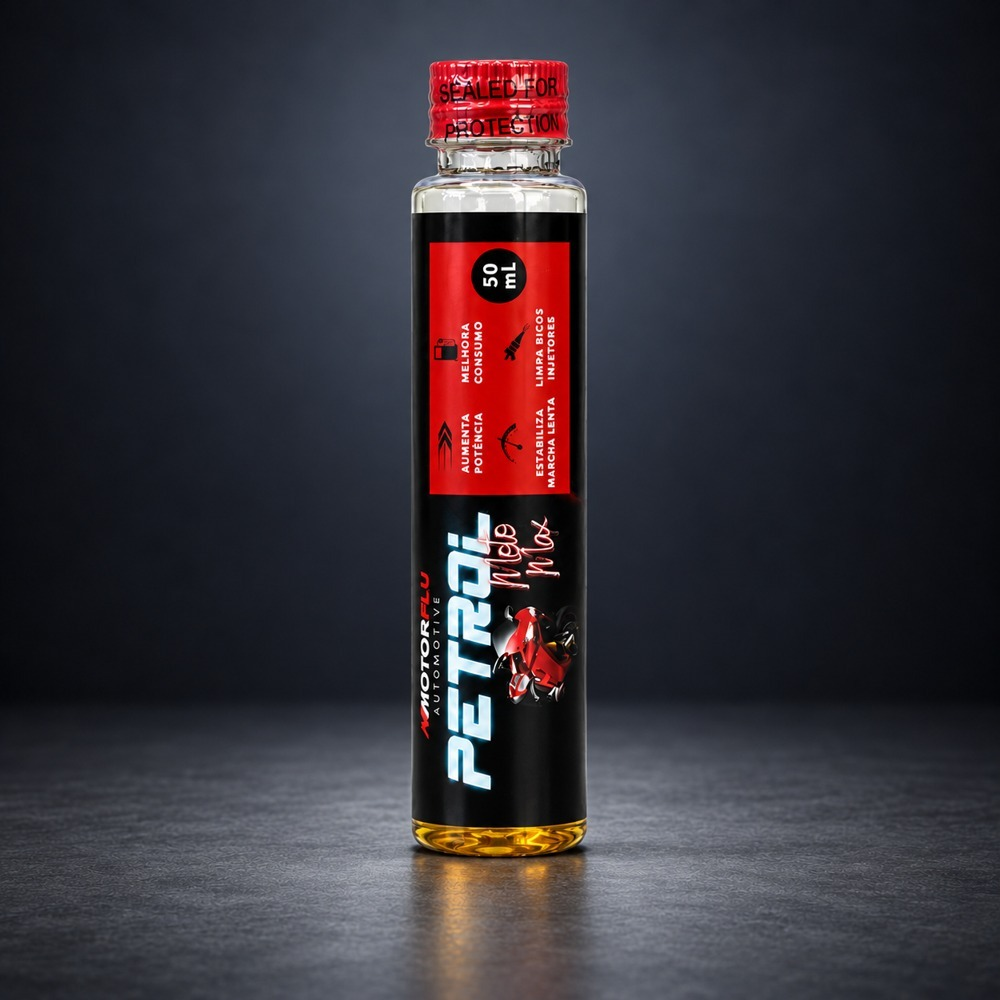

Combustíveis
Petrol Moto Max
Aditivo de combustível para motos
Tratamento de combustível para motocicletas, com foco em limpeza química do bico injetor, estabilidade da marcha lenta e rendimento do motor.
Principais benefícios
- Limpeza do bico injetor
- Marcha lenta estável
- Melhora da combustão
Indicação
Motocicletas a gasolina, etanol e flex.
Modo de uso
Consulte o rótulo e o boletim técnico para a dosagem, a aplicação e a compatibilidade com seu veículo ou equipamento.
Documentação técnicaConsulte os detalhes
Consulte os detalhes
do produto.
Na mesma linha
Voltar ao catálogo